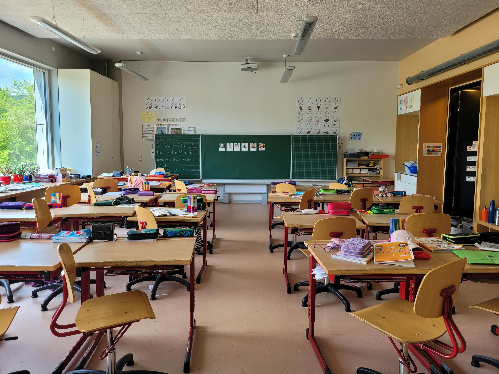
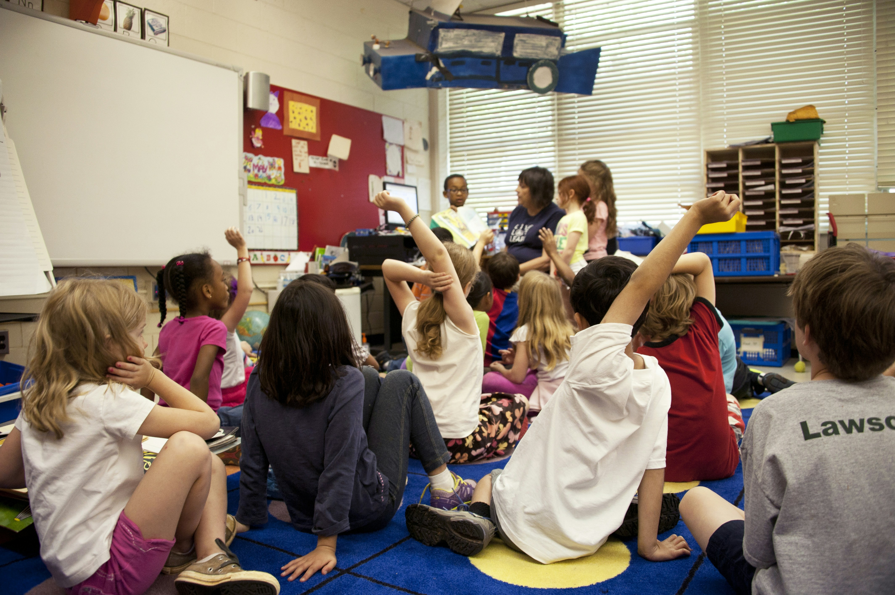

Investimento na Educação Básica
Inclusão digital e fortalecimento da rede pública de ensino.
Infraestrutura Escolar
Acompanhamento de instalações físicas e recursos pedagógicos.

Comunidade Escolar
Mapeamento de estudantes e turmas em todo o estado.

Educação Profissional e EJA
Estatísticas de matrículas para formação técnica e continuada.

Transparência de Dados
Acesso público e estruturado aos números oficiais do INEP.
Censo Escolar da Paraíba
Mapeamento das escolas e matrículas de toda a rede paraibana.
Sobre a Aplicação
Projeto desenvolvido na disciplina de Programação Web para extração e apresentação dos dados abertos do INEP.
Volume de Dados
Base processada com mais de 5.600 escolas paraibanas mapeadas entre as redes pública e privada.
Top 10 Instituições
Consulte o ranking das dez instituições de ensino com maior volume de matrículas totais no estado.
Ver Ranking